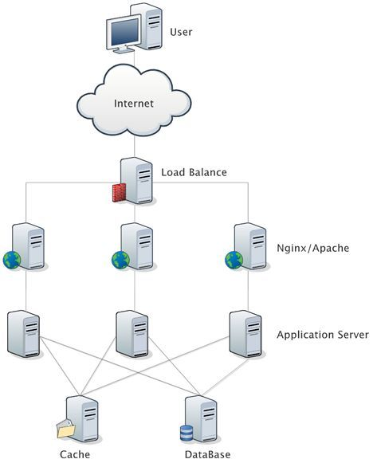
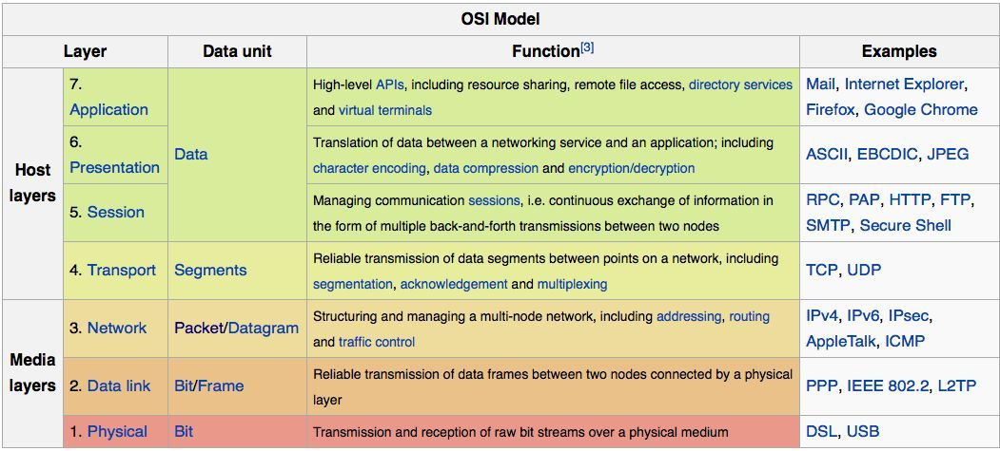
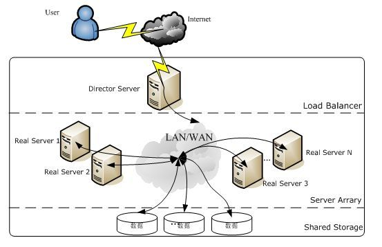
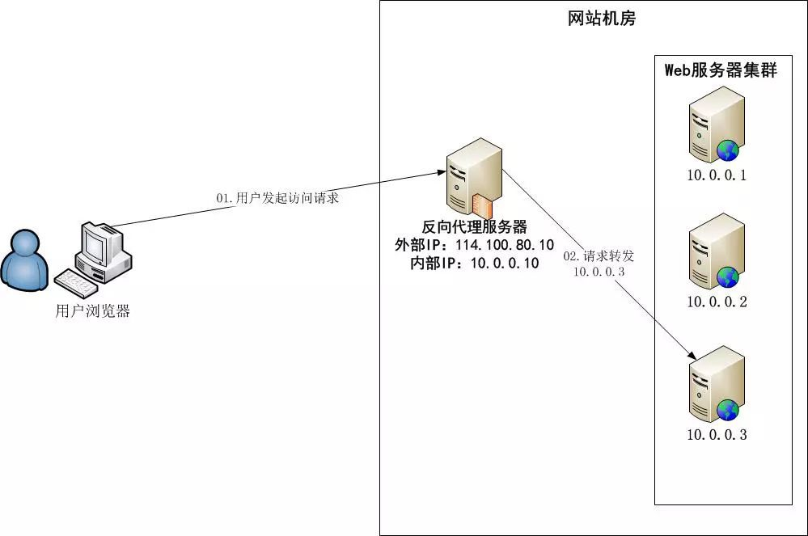

夏后殷商西东周，春秋战国秦皇收，西汉东汉魏蜀吴，西晋东晋兼五胡。匈奴羯氏羌慕容，拓跋代北后称雄。宋齐梁陈是南朝，北魏齐周称北朝。北周灭齐传於隋，隋又灭陈再统一。隋灭唐兴称富强，五代十国各称王。契丹兴起在北方，建号为辽入汴梁。五代梁唐晋汉周，宋朝建国陈桥头。女真建金先灭辽，打破汴京北宋消。南宋偏安在江南，蒙古兴起国号元。灭金灭宋归一统，元朝统治九十年。明代共传十六君，满洲初起号后金。后金国号改为清，入关称帝都北京。人民觉悟革命起，清帝退位民国立。人民民主再胜利，齐心奔向共产国。
Nginx收集
一、列表
-
- 可能原因
- http连接太多没有关闭导致的。
- 机器的内存不够了。
- 由于请求频率过快，被目标网站封IP了
- 请求的url地址错误
- 解决方案
- 增加重试连接次数：
requests.adapters.DEFAULT_RETRIES = 5 - 关闭多余的连接：requests使用了urllib3库，默认的http connection是keep-alive的，requests设置False关闭。
- 增加重试连接次数：
- 可能原因
FastCGI sent in stderr: “Unable to open primary script
配置
1 | #字符集 |
常见日志处理
- 统计每个ip访问的次数
awk '{i=$1;a[i]+=1;}END{for(i in a)printf("%d %s \n",a[i],i)}' access.log
1
2
3
4
5
6
7
8
9
10
11
12
13
142093 192.168.10.1
2 192.168.10.2
2 192.168.10.3
1 127.0.0.1
1259 127.0.0.1
1 192.168.10.10
2 192.168.10.4
2 192.168.10.5
2 192.168.10.6
2 192.168.10.7
2 192.168.10.8
1 192.168.10.9
1 192.168.10.18
1 192.168.10.0- 统计访问最多的前10个ip
awk '{i=$1;a[i]+=1;}END{for(i in a)printf("%d %s \n",a[i],i)}' access.log | sort -nr |head -n 10
1
2
3
4
5
6
7
8
9
102093 192.168.10.1
1259 127.0.0.1
2 192.168.10.8
2 192.168.10.7
2 192.168.10.6
2 192.168.10.5
2 192.168.10.4
2 192.168.10.3
2 192.168.10.2
1 192.168.10.9获取具体时间段内的日志
- 日志格式access.log((打印Jun15-20号的日志，不做年份的限制))
1
10.2.24.141 - - [19/Jun/2020:09:56:57 +0800] "POST /index.php?mod=api&ver=0.1&SESSION=%7B%22rid%22:%228201_186%22, %22sec%22:%228201%22,%22pGroup%22:%22default%22,%22tls%22:0%7D HTTP/1.1" 200 121 "-" "-" "-"
- 处理脚本
awk '{split($4, a, "/"); d=substr(a[1],2); if(d>=15 && d<=20 && a[2]=="Jun") { print $0;} }' access.log - 日志格式打印Apr 26号的日志)
1
127.0.0.1 - - [26/Apr/2018:11:12:48 +0800] "GET /inc.php HTTP/1.1" 200 62437 "-" "Mozilla/5.0 (Macintosh; Intel Mac OS X 10_15_7) AppleWebKit/537.36 (KHTML, like Gecko) Chrome/90.0.4430.85 Safari/537.36"
- 处理脚本
awk '{split($4, a, "/"); d=substr(a[1],2); if(d==26 && a[2]=="Apr") { print $0;} }' access.log
- 统计每个ip访问的次数
502 upstream sent too big header while reading response header from upstream ...1
2
3
4
5
6
7fastcgi_intercept_errors off;
fastcgi_buffer_size 16k;
fastcgi_buffers 4 16k;
proxy_buffer_size 128k;
proxy_buffers 16 256k;
proxy_busy_buffers_size 256k;epoll：举个例子：假设进程有10万个TCP连接，且只有几百个连接是有事件需要处理的。那么在每一个时刻进程只需要处理这几百个有事件(即TCP连接上有数据需要交互)需要处理的连接即可。
- select和poll这样处理的：在某一时刻进程收集所有的连接，并把所有连接的套接字传给操作系统（这个过程其实是用户态内存到内核态内存的复制），而由操作系统内核寻找这那几百个有事件需要处理的连接并处理，然后返回数据给用户。
- 这个过程需要操作系统把全部的连接处理一边，极大浪费系统资源。
- epoll是这样做的：
- 调用epoll_creat函数建立一个epoll对象（一颗红黑树，一个准备就绪list链表）。
- 调用epoll_ctl函数把socket放到红黑树上，给内核中断处理程序注册一个回调函数，告诉内核如果这个句柄的中断到了，就把这个socket放到准备就绪list链表里。
- 调用epoll_wait到准备就绪list链表中处理socket，并把数据返回给用户。
- 不需要把全部的连接处理一遍，只需要去list链表里处理socket。
- select和poll这样处理的：在某一时刻进程收集所有的连接，并把所有连接的套接字传给操作系统（这个过程其实是用户态内存到内核态内存的复制），而由操作系统内核寻找这那几百个有事件需要处理的连接并处理，然后返回数据给用户。
reported about an closed connection (54: Connection reset by peer)
- php内存设置过小导致运行过程中进程异常终止
- php.ini设置：
memory_limit = 128M - www.conf设置：`php_admin_value[memory_limit] = 32M`
- php.ini设置：
- Connection reset by peer
- php内存设置过小导致运行过程中进程异常终止
高并发nginx调优
- 调整worker_processes数量
- 意为生成的worker数量，最佳实践是每个CPU运行1个工作worker。
- 调整worker_connections数量
- 意为同时提供服务的客户端数量，一般设为1024
- 启用Gzip压缩
- 压缩文件大小，减少了客户端HTTP请求的传输带宽，提高了加载速度
- 启用静态文件缓存
- 减少传输带宽提升速度
- 设置timeout
- client_header_timeout：指定等待client发送一个请求头的超时时间
- 如果在超时时间内client没发送任何东西，nginx返回HTTP状态码408(“Request timed out”)
- client_body_timeout：设置请求体的读超时时间。
- 超时后，nginx返回HTTP状态码408(“Request timed out”)
- keepalive_timeout：指定client的keep-alive连接超时时间，服务器将会在这个时间后关闭连接。
- keepalive可减少打开和关闭连接所需的CPU和网络开销
- send_timeout：指定客户端的响应超时时间。
- 如果在这段时间内客户端没有读取任何数据，nginx就会关闭连接。
- client_header_timeout：指定等待client发送一个请求头的超时时间
- 关闭access_logs
- 调整worker_processes数量
x509: certificate signed by unknown authority
Nginx状态码
一、基础
HTTP状态码(英语：HTTP Status Code)是用以表示网页服务器超文本传输协议响应状态的3位数字代码。它由RFC 2616规范定义的，并得到RFC 2518、RFC 2817、RFC 2295、RFC 2774与RFC 4918等规范扩展。所有状态码的第一个数字代表了响应的五种状态之一。所示的消息短语是典型的，但是可以提供任何可读取的替代方案。除非另有说明，状态码是HTTP/1.1标准(RFC 7231)的一部分。HTTP状态码的官方注册表由互联网号码分配局(Internet Assigned Numbers Authority)维护。

二、常见错误码
400
- Bad Request，往往因为语法错误而无法被服务端理解
413
Request Entity Too Large，请求体过大，一般出现在上传大文件请求
解决办法
- 修改nginx配置文件
1
client_max_body_size 8M; ## 设置客户端请求体最大值
- 修改php.ini
1
2post_max_size = 8M # 整个表单提交的最大限制
upload_max_filesize = 2M # 上传单个文件的最大限制
499
nginx独有，表示在收到客户端完整的HTTP request前，客户端试图关闭TCP连接导致
下载nginx-1.16.1.tar.gz，解压到nginx-1.16.1目录，打开
nginx-1.16.1/src/http/ngx_http_request.h文件，见499定义：1
2
3
4
5
6
7/*
* HTTP does not define the code for the case when a client closed
* the connection while we are processing its request so we introduce
* own code to log such situation when a client has closed the connection
* before we even try to send the HTTP header to it
*/
#define NGX_HTTP_CLIENT_CLOSED_REQUEST 499复现
- 定义处理请求脚本
index.php，直接加入sleep(10); - 通过curl请求
curl -m 2 http://localhost/index.php - 查看访问日志
tail -n 10 access.log
- 定义处理请求脚本
500
502：Bad Gateway是指错误网关，无效网关
- 一般可通过是杀死php-fpm进程再请求web来复现
503
Service Temporarily Unavailable，即服务暂时不可用，一般由于临时的服务器维护或者过载，服务器当前无法处理请求。504
-
- 由于启动用户和nginx工作用户不一致所致
- 缺少index.html或者index.php文件
- 权限问题，如果nginx没有web目录的操作权限
- SELinux设置为开启状态（enabled）的原因
nginx状态码定义
1 | #define NGX_HTTP_CONTINUE 100 |
三、参考
echo模块
一、基础
Nginx由内核和模块组成：内核的设计非常微小和简洁，完成的工作也非常简单，仅仅通过查找配置文件将客户端请求映射到一个location block，而在这个location中所配置的每个指令将会启动不同的模块去完成相应的工作；Nginx的功能如此强大是因为它有非常多的模块来支撑，Nginx本身包含很多模块，用户也可以根据自己的需求开发模块。
Nginx模块从结构上分为：基础模块、核心模块和第三方模块。核心模块包含HTTP模块、EVENT模块和MAIL模块等；基础模块包含HTTP Access模块、HTTP FastCGI模块、HTTP Proxy模块和HTTP Rewrite模块等；第三方模块包含HTTP Upstream Request Hash模块、Notice模块和HTTP Access Key模块等。第三方模块从功能上又可以分为Handlers处理器模块：直接处理请求，并进行输出内容和修改headers信息等操作，一般只有一个；Filters过滤器模块：主要对其他处理器模块输出的内容进行修改操作，最后由Nginx输出；Proxies代理类模块：此类模块是Nginx的HTTP Up-stream之类的模块，主要与后端一些服务比如FastCGI等进行交互，实现服务代理和负载均衡等功能。用户根据自己的需要开发的模块都属于第三方模块。正是有了这么多模块的支撑，Nginx的功能才会如此强大。
nginx echo模块是在nginx程序上扩展了echo输出字符的功能，对于调试很方便，传送门。
二、开干
- 进入nginx目录这一步可选
- 下载echo模块
git clone https://github.com/openresty/echo-nginx-module - 查看nginx相关信息，主要为了取configure信息
/usr/local/nginx1.17.5/sbin/nginx -V - 复制上一步中的
configure arguments:后面的信息，即上一次编译时的参数 - 环境验证并生成Makefile
sudo ./configure --prefix=/usr/local/nginx1.17.5 --add-module=/usr/local/src/nginx-1.17.5/echo-nginx-module - 重新编译
make，千万不要make install，否则会把原先安装的都覆盖掉 - 备份
sudo mv /usr/local/nginx1.17.5/sbin/nginx /usr/local/nginx1.17.5/sbin/nginx.bak - 替换
sudo cp /usr/local/src/nginx-1.17.5/objs/nginx /usr/local/nginx1.17.5/sbin/ - 重启
sudo /usr/local/nginx1.17.5/sbin/nginx -s reload
三、demo
- 配置vhost
1 | default_type text/plain; |
- 重启nginx
1 | sudo killall nginx |
- 浏览器访问
http://localhost/echo?a=1&b=2
四、参考
负载均衡与反向代理
一、反向代理
核心定义：反向代理是介于客户端与后端业务服务器之间的中间代理服务，客户端所有请求统一发送至反向代理服务器，再由代理服务器转发请求至对应的后端真实服务器，并将后端服务器的响应结果返回给客户端。整个过程中，客户端始终只与代理服务器交互，无法感知后端真实服务器的存在。
核心作用
隐藏后端服务：屏蔽真实服务器IP、端口及架构信息，避免后端服务器直接暴露在公网，有效抵御攻击，提升服务安全性。
统一入口管理：将多个后端服务统一聚合，客户端仅需访问统一代理地址，简化客户端访问配置。
实现动静分离：可单独代理静态资源（图片、CSS、JS、静态页面），将动态请求转发至业务服务器，减轻后端服务器压力。
基础缓存加速：对高频访问的静态资源、接口数据进行缓存，减少重复请求转发，提升访问响应速度。
权限与流量管控：统一实现请求鉴权、限流、黑名单、HTTPS加密等功能，统一管控全网请求流量。
常见应用场景：Web网站服务、微服务网关转发、多服务统一域名访问、公网服务安全防护、HTTPS证书统一部署等。
主流实现工具：Nginx、Apache、Squid、Traefik、OpenResty等，其中Nginx是目前最常用的反向代理工具。
二、负载均衡
- 核心定义：负载均衡（Load Balance）是建立在现有网络架构之上的流量分发技术，是对反向代理能力的进阶延伸。其核心思想是将客户端海量的网络请求、业务访问流量，合理分摊到多台后端业务服务器（Web服务器、FTP服务器、应用服务器等）协同处理，避免单台服务器负载过高、性能瓶颈、单点故障问题。
该技术能够低成本、高效、透明地扩展网络设备与服务器的带宽、提升数据吞吐量、强化网络数据处理能力，最终提升整个服务集群的灵活性、可用性与并发承载能力，保障服务稳定运行。
- 核心价值
分担服务压力：将并发流量分散至多台服务器，解决单服务器性能上限问题，提升集群并发能力。
实现高可用：单台后端服务器故障时，负载均衡器可自动剔除故障节点，将流量分发至正常服务器，避免服务中断。
弹性扩容：业务流量增长时，可直接新增后端服务器接入集群，无需修改整体架构，扩容灵活。
提升资源利用率：合理分配流量，避免部分服务器负载过高、部分服务器闲置的资源浪费问题。
- 六大核心分发算法（原理+优缺点+适用场景）
- 轮询法
核心原理：将客户端请求按照固定顺序，依次轮流分配给后端每一台服务器，平等对待所有后端节点，不区分服务器的当前负载、连接数、硬件配置差异。
优点：算法简单、无计算开销、流量分配绝对均匀，部署维护便捷。
缺点：无法适配服务器性能差异，也不感知实时负载。若部分服务器配置低、负载高，依然会被分配等量请求，易导致服务响应不均、部分节点过载。
适用场景：后端服务器硬件配置、性能一致，业务请求流量均匀、无特殊差异的场景。
- 随机法
核心原理：基于系统随机算法，根据后端服务器集群的节点总数，随机选取一台服务器处理当前客户端请求。服务器节点数量越多，流量分配越趋近均匀。
优点：算法极简、运算速度快，高并发场景下流量整体分布均衡。
缺点：流量分配存在随机性，无法精准均衡负载；不感知服务器性能和实时负载，可能出现性能差的服务器被频繁分配请求的情况。
适用场景：后端服务器性能一致、瞬时并发量大，对流量分配精准度要求不高的场景。
- 源地址哈希法
核心原理：获取客户端访问的IP地址，通过哈希函数计算出固定数值，再用该数值对后端服务器列表节点数做取模运算，最终确定当前请求对应的后端服务器序号。只要后端服务器集群节点列表不变，同一客户端IP的每次请求，都会固定映射到同一台后端服务器。
优点：实现客户端会话绑定，同一用户始终访问同一台服务器，有效保留会话信息、缓存数据，避免会话丢失。
缺点：存在流量倾斜问题，若大量用户IP哈希结果集中在某几台节点上，会导致部分服务器负载过高；集群节点变更时，哈希映射关系会失效，会话会重新分配。
适用场景：需要保持会话一致性、用户登录态持久化的业务场景（如用户中心、购物车系统）。
- 加权轮询法
核心原理：在基础轮询的基础上引入权重配置，根据后端服务器的硬件配置、性能、负载能力差异化分配权重。配置高、负载承受能力强的服务器设置更高权重，分配更多请求；配置低、性能较弱的服务器设置低权重，减少请求分配量，按权重顺序轮流分发流量。
优点：适配服务器性能差异，充分利用高性能服务器资源，避免低配置服务器过载，流量分配更贴合实际服务能力。
缺点：属于静态分配算法，无法实时感知服务器动态负载，仅依靠固定权重分配，无法适配服务器运行中的负载波动。
适用场景：后端服务器硬件配置、性能不一致，且服务器负载相对稳定的场景。
- 加权随机法
核心原理：结合随机法与权重机制，不再按顺序分配流量，而是根据后端服务器的性能、负载配置差异化权重，通过加权随机算法选取服务器处理请求，权重越高的服务器，被选中的概率越大。
优点：兼顾随机性与差异化，相比纯随机法，能优先利用高性能服务器资源，适配不同配置的服务节点。
缺点：同样为静态算法，无实时负载感知能力，无法根据服务器实时运行状态调整流量分配。
适用场景：后端服务器性能不均、瞬时并发波动大，无需严格顺序分发流量的场景。
- 最小连接数法
核心原理：属于动态负载均衡算法，负载均衡器实时统计每台后端服务器的当前活跃连接数，动态选取连接数最少、当前负载最轻的服务器处理新的客户端请求。
优点：实时感知服务器负载状态，动态适配流量波动，精准规避高负载节点，最大化均衡集群负载，资源利用率最高。
缺点：需要实时统计、计算各服务器连接数，算法开销高于静态算法；长连接业务场景下负载统计精度会受影响。
适用场景：服务器配置差异小、业务请求处理时长不均、流量波动大的场景（如接口服务、长连接业务）。
- 负载均衡分类
四层负载均衡：基于TCP/IP协议、IP+端口转发流量，转发速度快、性能高，适合通用网络流量分发，代表工具：Nginx、LVS。
七层负载均衡：基于HTTP/HTTPS应用层协议，可识别URL、Cookie、请求头信息，支持精细化流量分发，代表工具：Nginx、Apache。
三、反向代理与负载均衡的关联与区别
关联：负载均衡是反向代理的核心延伸功能，绝大多数反向代理工具都集成了负载均衡能力；二者均通过代理服务器转发请求，屏蔽后端真实服务，统一流量入口。
核心区别：
反向代理侧重请求转发、安全防护、统一入口，解决服务暴露、访问统一化问题；负载均衡侧重流量分发、负载分摊、高可用，解决单服务性能瓶颈、集群压力均衡问题。
Openresty
一、概念
Openresty是一个基于Nginx与Lua的高性能Web平台，其内部集成了大量精良的Lua库、第三方模块以及大多数的依赖项。用于方便地搭建能够处理超高并发、扩展性极高的动态Web应用、Web服务和动态网关。可以使用Lua脚本调用Ngnix支持的C以及Lua模块，快速构建10K～1000K单机并发连接的高性能web应用系统。OpenResty的目标是让web服务直接运行在Nginx服务内部，利用Ngnix的非阻塞IO模型，对HTTP客户端请求和后端DB进行一致的高性能响应。
Openresty通过汇聚各种设计精良的Nginx模块(主要由Openresty团队自主开发)，从而将Nginx有效地变成一个强大的通用Web应用平台。这样，Web开发人员和系统工程师可以使用Lua脚本语言调动Nginx支持的各种C以及Lua模块，快速构造出足以胜任10K乃至1000K以上单机并发连接的高性能Web应用系统。
Openresty的目标是让你的Web服务直接跑在Nginx服务内部，充分利用Nginx的非阻塞I/O模型，不仅仅对HTTP客户端请求,甚至于对远程后端诸如MySQL、PostgreSQL、Memcached以及Redis等都进行一致的高性能响应。
二、安装
使用源码安装
sudo wget https://openresty.org/download/openresty-1.15.8.2.tar.gzsudo tar -zxvf openresty-1.15.8.2.tar.gzcd openresty-1.15.8.2sudo ./configure，默认安装到/usr/local/openresty
homebrew安装
三、参考
LVS-Nginx-HAProxy
一、核心概念
当前主流互联网系统普遍采用服务器集群技术，将相同业务服务部署在多台服务器上，组成集群统一对外提供服务，涵盖Web应用、数据库、分布式缓存等各类服务集群。单纯扩容单台服务器硬件，无法解决高并发访问下的CPU、I/O性能瓶颈，因此必须依托负载均衡技术分发流量、分摊服务压力。
负载均衡设备作为服务集群的流量入口，可智能筛选最优后端服务器，透明转发客户端请求，实现流量均匀分配、服务高可用与性能扩容。目前企业生产环境中，LVS、Nginx、HAProxy是应用最广泛的三款软件负载均衡工具，三者分属不同网络层级，核心能力、适用场景差异显著。

二、基础层级与核心定位对比

1. LVS（Linux Virtual Server，Linux虚拟服务器）
LVS由章文嵩博士于1998年研发，是国内首个知名自由软件项目，目前已完全集成进Linux内核（2.4及以上版本），无需打补丁、无需额外部署依赖，原生支持高性能负载均衡。

（1）集群三层核心架构
LVS集群架构对客户端完全透明，用户仅感知一台虚拟服务器，无法看到后端真实服务集群，核心分为三层：
负载调度器（LB/Director）：前端核心入口，配置虚拟IP（VIP），负责接收客户端请求，通过调度算法和转发规则分发流量至后端真实服务器，是整个集群的流量调度核心。
真实服务器池（RS集群）：后端业务服务集群，实际处理客户端请求，可部署Web、FTP、DNS、数据库等各类服务，服务器之间可通过局域网/广域网组网。
共享存储：为后端RS集群提供统一存储，保证所有服务器服务内容一致，实现无状态服务，适配流量分发需求。
（2）负载均衡层级与机制
LVS是纯四层负载均衡（工作在OSI传输层），仅基于TCP/UDP协议工作，不解析应用层协议，无法处理HTTP URL、请求头、Cookie等应用层内容。
核心转发原理：依托Linux内核IPVS模块工作，用户空间工具ipvsadm定义流量转发规则，内核空间IPVS模块匹配数据包的目的IP、端口，通过修改数据包IP、MAC地址或封装IP报文实现流量转发，转发效率极高。
2. Nginx
Nginx是一款高性能、轻量级的HTTP反向代理服务器，同时支持IMAP/POP3/SMTP邮件代理服务，凭借多路复用、事件驱动模型，具备低内存消耗、高并发处理的优势，是目前最主流的Web服务与七层负载均衡工具。

（1）进程工作模型
Nginx以守护进程后台运行，采用单主线程多进程模型，架构稳定高效：包含1个Master主进程和N个Worker工作进程（N≥1），所有进程均为单线程，进程间通过共享内存通信。
Master进程：负责监听系统信号、管理Worker进程，监控Worker运行状态，实现服务重启、配置热更新、故障自愈等管控能力，不处理具体业务请求。
Worker进程：实际处理客户端请求，多个Worker独立竞争请求，单Worker同一时间仅处理一个请求，避免线程竞争开销，保证服务稳定性。
（2）负载均衡层级与机制
Nginx以七层负载均衡（应用层）为主、四层负载均衡为辅，核心基于反向代理实现流量分发。可深度解析HTTP/HTTPS协议内容，支持基于URL、Cookie、请求头、域名等应用层规则精准转发流量，功能灵活性极强。
反向代理核心逻辑：客户端仅访问Nginx代理服务器，由Nginx接收所有连接请求，转发至后端真实业务服务器，再将服务器响应结果回传给客户端，全程隐藏后端服务真实地址，兼顾负载均衡与安全防护。
3. HAProxy
HAProxy是C语言开源开发的高性能代理工具，同时支持四层（TCP/UDP）和七层（HTTP/HTTPS）负载均衡，兼顾LVS的高性能和Nginx的灵活规则能力。专为大并发、高可用Web场景设计，可支撑数万级并发连接，能有效隔离后端服务器，避免内网服务直接暴露公网，广泛应用于大型网站、高可用集群架构。
核心优势：支持会话保持、七层精细规则、健康检查、故障自动剔除，兼顾四层转发的高效性与七层调度的灵活性，是中型、大型集群的优选负载均衡工具。
三、LVS核心转发模型（补全关键原理与特性）
LVS作为四层负载均衡，核心通过三种数据包转发模型实现流量分发，三种模型组网方式、性能、适用场景差异极大，且均有专属部署约束：
1. NAT模型（网络地址转换）
转发流程：①客户端请求报文源地址为客户端IP（CIP）、目的地址为LVS虚拟IP（VIP）；②LVS匹配规则后，修改报文目的IP为后端RS真实IP（RIP），转发至对应服务器；③RS处理请求后，响应报文回传至LVS；④LVS修改响应报文源IP为VIP，回传给客户端。
关键约束：后端所有RS的网关必须指向LVS，否则响应报文无法回传至LVS，导致请求失败。
特点：配置简单、支持跨网段组网，所有流量均经过LVS，瓶颈集中在调度器，并发性能相对较低。
2. DR模型（直接路由，生产最常用）
转发流程：①客户端请求报文（CIP→VIP）到达LVS；②LVS仅修改报文源MAC、目的MAC地址，将报文转发至对应RS；③RS直接解析报文、处理请求，响应报文不经过LVS，直接通过自身网卡回传给客户端。
关键约束：后端RS需在lo回环网卡绑定VIP，且关闭VIP的ARP响应，避免局域网内IP冲突。
特点：仅请求流量经过LVS，响应流量直出，LVS压力极小、并发性能极高，仅支持同网段服务器组网，是高性能集群首选。
3. TUN模型（IP隧道模式）
转发流程：①客户端发送CIP→VIP的请求报文至LVS；②LVS在原有报文外层新增一层IP封装，修改外层报文源地址为LVS物理IP（DIP）、目的地址为RS的RIP；③RS拆解外层IP封装，解析内层VIP请求并处理；④响应报文直接回传给客户端，不经过LVS。
关键约束：后端RS需开启IP隧道功能，lo网卡绑定的VIP不对外网广播。
特点：支持跨公网、跨网段组网，突破局域网限制，适合异地多活集群场景，配置复杂度最高。
四、三大工具调度算法（补全核心差异）
1. LVS 调度算法（静态+动态，内核级调度，性能最优）
LVS算法分为静态、动态两类，静态不感知服务器负载，动态实时适配后端服务器连接压力：
（1）静态算法（4种）
RR轮询：请求按顺序均匀分发至所有RS，不考虑服务器负载、连接数，适用于服务器性能一致的集群。
WRR加权轮询：为不同性能服务器配置不同权重，性能高的服务器承载更多流量，适配服务器性能差异化场景。
DH目标地址哈希：基于请求目标IP哈希固定分配服务器，实现目标IP请求的定点分发。
SH源地址哈希：基于客户端源IP哈希分配服务器，实现同一客户端请求固定访问同一RS，简易实现会话保持。
（2）动态算法（6种，默认WLC）
LC最少连接：动态将请求分发至当前连接数最少的服务器，均衡实时负载。
WLC加权最少连接（默认）：结合权重与实时连接数，高权重服务器承载更多连接，适配差异化性能集群，负载均衡效果最优。
SED最短延迟：优化WLC缺陷，仅核算活动连接，优先分发至响应延迟最短的服务器。
NQ永不排队：空闲无连接的服务器优先接收请求，避免服务器长期闲置，弥补SED调度短板。
LBLC基于局部性最少连接：适配缓存集群，目标IP固定访问最近使用的服务器，超载时重新匹配最少连接节点。
LBLCR带复制局部性最少连接：维护目标IP与服务器组的映射，支持节点复制，适配高并发缓存集群。
2. Nginx 调度算法（七层应用级调度）
核心适配HTTP/HTTPS场景，常用算法：轮询、加权轮询、ip_hash（会话保持）、least_conn（最少连接）、url_hash、fair（动态响应权重），支持基于应用层规则自定义调度，灵活性远超LVS。
3. HAProxy 调度算法（四七层通用）
兼容LVS、Nginx核心算法，支持轮询、加权轮询、最少连接、源IP哈希，额外支持精准的会话保持、故障熔断、权重动态调整，兼顾性能与灵活性。
五、三大工具优缺点与适用场景（补全修正核心差异）
| 工具 | 负载层级 | 核心优点 | 核心缺点 | 适用场景 |
|---|---|---|---|---|
| LVS | 四层（传输层） | 内核级转发，性能极高、并发量大、资源消耗少、稳定性强；支持TCP/UDP所有四层协议 | 无七层处理能力，无法解析HTTP协议、不能做URL/ Cookie转发、规则灵活性差；部署有专属组网约束 | 高并发大流量入口层负载均衡、TCP/UDP服务集群、需要极致转发性能的场景 |
| Nginx | 七层为主、四层为辅 | 应用层规则灵活，支持URL、Cookie、域名精准转发；配置简单、部署便捷、支持HTTPS、静态资源缓存 | 单节点并发性能低于LVS；仅原生支持HTTP相关协议，四层转发能力较弱 | Web服务集群、静态资源代理、中小型业务负载均衡、需要精细化流量管控的场景 |
| HAProxy | 四层+七层双支持 | 兼顾高性能与高灵活度；支持完善的健康检查、会话保持、故障熔断；适配TCP与HTTP双场景 | 性能略低于LVS；配置复杂度高于Nginx | 中大型业务集群、需要同时兼容四层和七层负载、高可用高稳定性要求的场景 |
六、企业常用架构组合（新增实战落地内容）
生产环境中常采用LVS+Nginx/HAProxy分层架构，结合三者优势：
前端入口：LVS部署四层负载均衡，承接全网大流量，实现高并发流量分发，保障入口性能与稳定性；
中层代理：Nginx/HAProxy做七层精细化调度，完成URL路由、HTTPS解密、会话保持、缓存优化等业务层管控；
后端服务：真实业务服务器集群处理具体请求，实现性能、灵活性、高可用的完美兼顾。
七、简单对比
| 工具 | 工作层级 | 核心优点 | 核心缺点 | 适用场景 |
|---|---|---|---|---|
| LVS | 四层 (传输层，内核 IPVS) | 性能最强、并发高、资源消耗低，支持 TCP/UDP | 无七层能力，不能解析 HTTP，组网部署复杂 | 大流量入口，TCP/UDP 集群，追求极致转发性能 |
| Nginx | 七层为主，四层为辅 | 配置简单、七层规则灵活（URL/Cookie/ 域名），支持 HTTPS、静态缓存 | 四层弱，单节点性能弱于 LVS，侧重 HTTP | Web 集群、静态资源、中小型业务、七层路由 |
| HAProxy | 四层 + 七层双支持 | 兼顾性能与七层能力，健康检查 / 会话保持完善 | 性能弱于 LVS，配置比 Nginx 复杂 | 中大型 Web 集群，同时需要 TCP+HTTP 负载均衡 |
PHP+Nginx优化
一、配置
监控php-fpm的状态
- 修改对应的vhost，在server内加入以下配置
1
2
3
4
5location ~ ^/status$ {
include fastcgi_params;
fastcgi_pass 127.0.0.1:9000;
fastcgi_param SCRIPT_FILENAME $fastcgi_script_name;
} - 修改php-fpm.conf，打开以下选项：
1
pm.status_path = /status
- 访问http://域名/status以查看当前的php情况，
- 结果说明
1
2
3
4
5
6
7
8
9
10
11
12
13pool: www php运行的组
process manager: dynamic php-fpm运行的方式
start time: 04/Jun/2012:16:05:32 +0800 开始时间
start since: 5932
accepted conn: 65678 接受链接
listen queue: 0 监听队列
max listen queue: 1 最大监听队列
listen queue len: 128 监听队列len
idle processes: 82 空闲进程
active processes: 4 活动进程
total processes: 86 总进程
max active processes: 25 最大活动进程
max children reached: 0 最大的子进程达到- 修改对应的vhost，在server内加入以下配置
按上面的步骤弄完并看不出来什么问题，查看对应的日志，报了一堆
upstream timed out (60: Operation timed out)在server内加入以下配置
1 | large_client_header_buffers 4 16k; |
- 重启ngix，响应速度并没有快多少，只是不再报
upstream timed out (60: Operation timed out)了